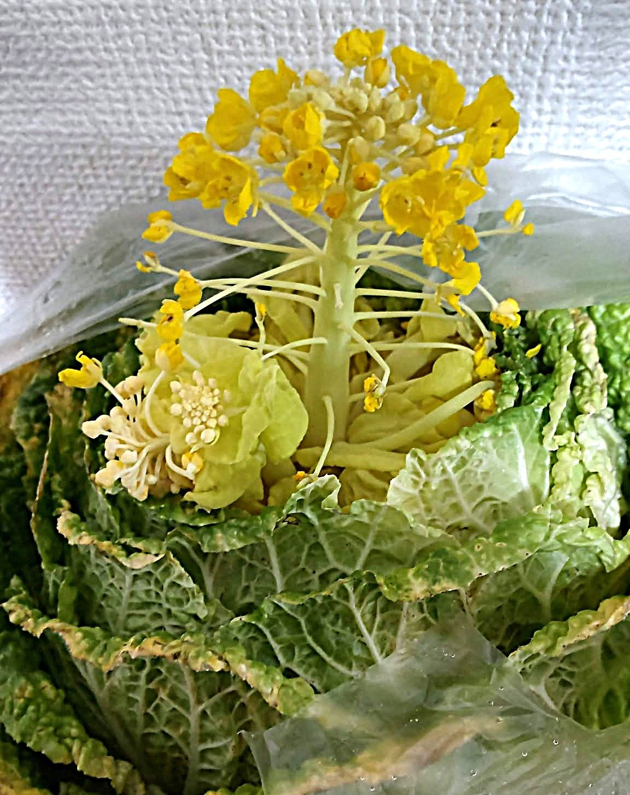

日常
親父殿から届いた白菜が大きすぎる件

家庭菜園を楽しんでいる親父殿から白菜（一玉）をいただきました。
オトウサマ、ワタクシめは一人暮らしでござる。
スーパーに売ってる白菜の1.5倍くらいあるサイズの白菜（一玉！）はさすがに多すぎるでござる。
食べても食べてもなくなりません！
他にもレタスやほうれん草やネギや…だから多いですありがとう！！
同じくらいアブラムシも多いんだけども！？
アブラムシ除去にはお湯と聞いたので、お湯にさらし、茹で、ゴム手袋をしてゴシゴシ手洗いしてもまだ出てくるアブラムシ！
スーパーの野菜にはめったに遭遇しないのに。
世界中の農家サマ、農薬サマ、農業関係者サマに感謝を！
と、よくわからない宗教にハマリそうでございました。
本日は、白菜の葉っぱの裏から蜘蛛の糸にぐるぐる巻きになった蜂（成虫）がコンニチハ！とご挨拶に。
目を逸らして葉ごと新聞でぐるぐる巻きにしてゴミ箱へお送りさせていただきました。
できれば二度とお会いすることのないよう心の底からお祈りしております！！
さらに、ほぼ光のない冷蔵庫に安置されているというのに白菜から菜の花がコンニチハ。
なんという生命力でしょう…